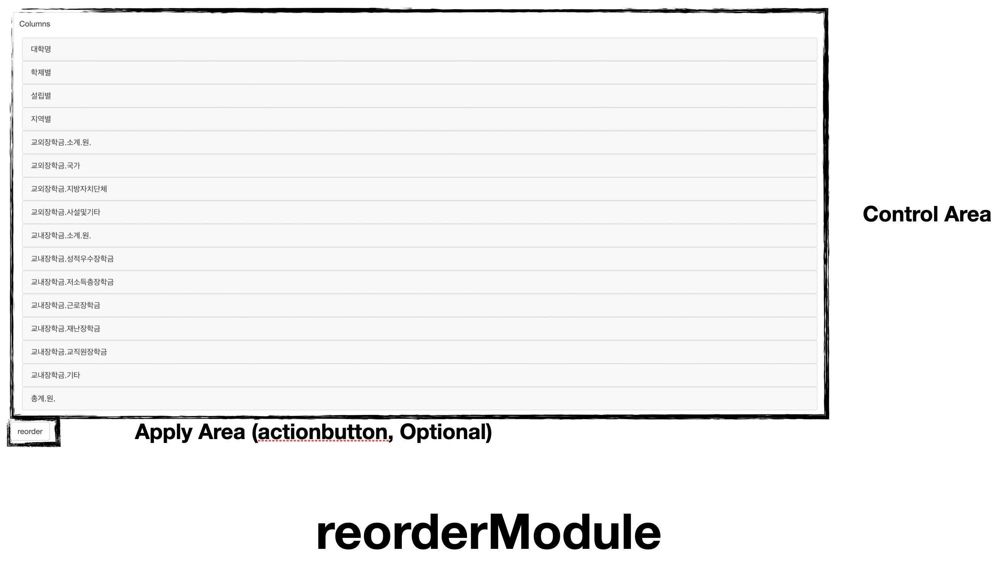
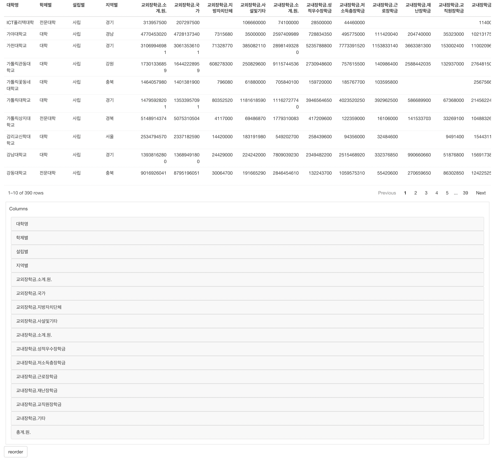
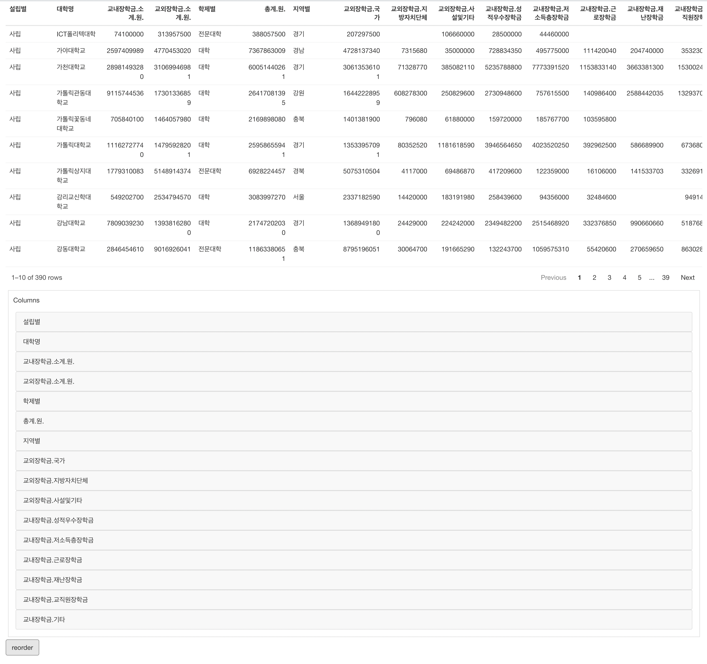

How to use reorderModule
Source:vignettes/articles/usage-reorder-Module.Rmd
usage-reorder-Module.RmdIntroduction
scissor’s reorderModule shows and change
order of column using sortable
In this article, we’ll use scholarship dataset of datatoys
This article is based on 0.2.0 Version of scissor
Declare module
scissor’s module assumes that used in the Shiny application.
and You can use snippet(type shinyapp) to build very
basic shiny application.
library(shiny)
ui <- fluidPage(
)
server <- function(input, output, session) {
}
shinyApp(ui, server)This application will show nothing.
So let’s add `reorderModule`` in ui.
ui <- fluidPage(
mod_reorderModule_ui(
id = 'module'
)
)also, reorderModule in server.
server <- function(input, output, session) {
mod_reorderModule_server(
id = "module",
inputData = reactive(datatoys::scholarship)
)
}So final (which is very basic) code will like this.
library(shiny)
ui <- fluidPage(
mod_distributionModule_ui(
id = 'distModule'
)
)
server <- function(input, output, session) {
mod_reorderModule_server(
id = "module",
inputData = reactive(datatoys::scholarship) # remotes::install_github('statgarten/datatoys')
)
}
shinyApp(ui, server) # run applicationYou should notice 3 things.
- both
idin ui and server should be same. -
inputDatain server should be format of reactive - Module’s reorder will not effect to
inputDatayet
Structure of reorderModule

reorderModule is consisted with Control Area
and below using flow.
- Declare module (we did already)
- Drag and drop column to reorder
- Apply (you should declare additional Action button)
Usage of reorderModule
Let’s add action button and table (to view data) like below.
library(shiny)
ui <- fluidPage(
reactable::reactableOutput('table'),
mod_reorderModule_ui(
id = 'module'
),
actionButton(
inputId = "applyReorder",
label = 'reorder'
)
)
server <- function(input, output, session) {
# Data link
inputData <- reactiveVal(NULL)
inputData(datatoys::scholarship)
data_rv <- reactiveValues(data = NULL)
observeEvent(inputData(), {
data_rv$data <- inputData()
})
# Data View
output$table <- reactable::renderReactable({
reactable::reactable(data_rv$data)
})
# Reorder Module
res_reorder <- mod_reorderModule_server(
id = "module",
inputData = reactive(data_rv$data)
)
# Apply
observeEvent(input$applyReorder, {
data_rv$data <- res_reorder() # reactive
inputData(data_rv$data) # then use isolated
})
}
shinyApp(ui, server) # run applicationwhen you run it you can see image like below.

and if you make change to order of column and apply, you can see result in table.

For any issue or suggestion, please make issue in scissor’s github.